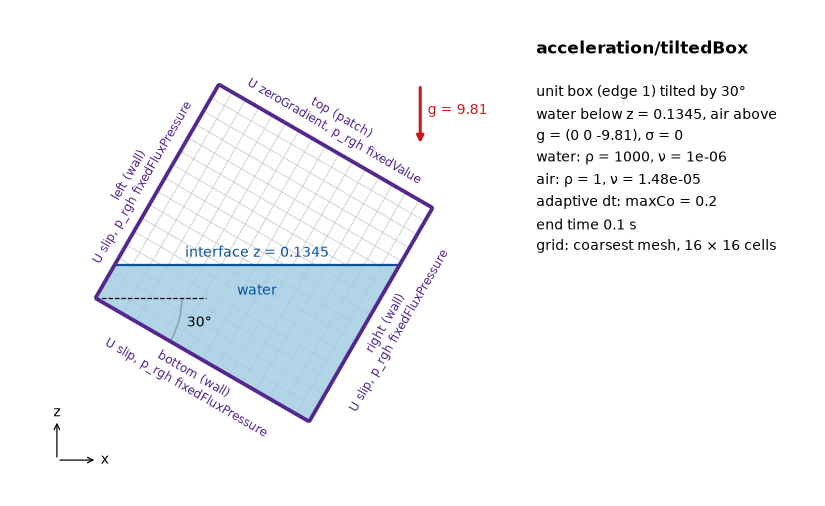
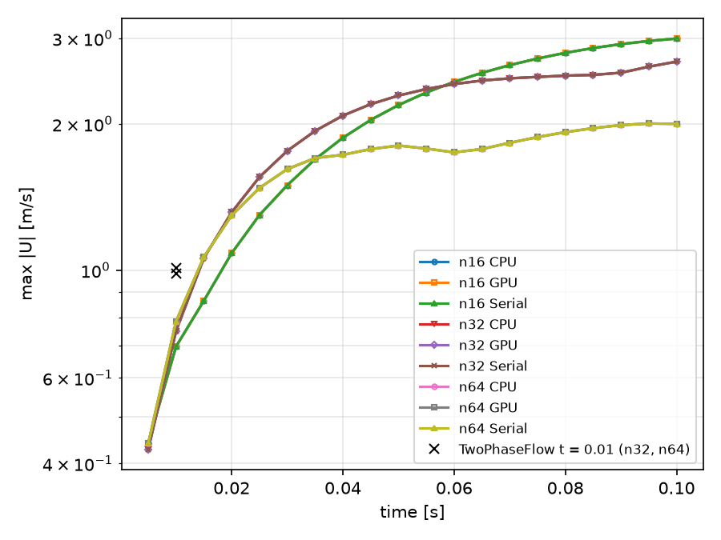
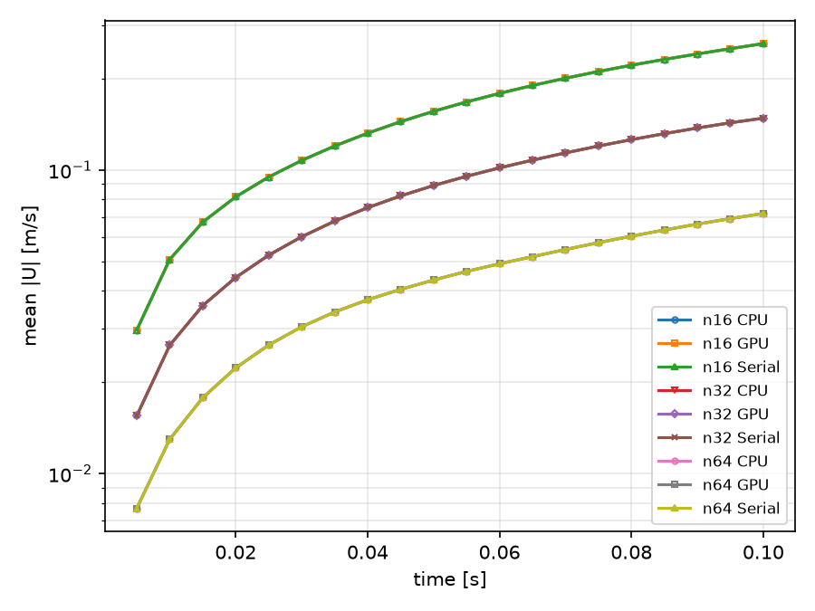
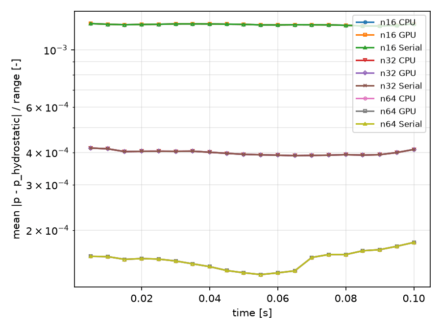

acceleration/tiltedBox¶
Hydrostatic balance in a tilted box: the spurious currents of the gravity force across
the interface, in NeoFOAM’s incompressibleVoFNeoN. The case is TwoPhaseFlow’s
run/benchmark/acceleration/tiltedBox (numufoam’s acceleration/tiltedBox with
ρ = 1000/1).
Setup¶

The unit box (x-z, one cell in y) tilted by 30°, with water below the horizontal interface z = 0.1345, slip walls and an open top, on the coarsest grid (n = 16).¶
Quantity |
Value |
Where set |
|---|---|---|
Domain |
unit box tilted by 30° about y |
|
Interface |
plane z = 0.1345, water below |
|
Gravity g |
(0, 0, −9.81) m/s² |
|
Surface tension σ |
0 |
|
Water ρ, ν |
1000 kg/m³, 1e-6 m²/s |
|
Air ρ, ν |
1 kg/m³, 1.48e-5 m²/s |
|
Alpha advection |
isoAdvector, gradAlpha |
|
Pressure–velocity |
no momentum predictor, 6 correctors |
|
Time step, end time |
adaptive, |
|
Samples |
every 0.005 s |
|
The fluids should stay at rest. NeoFOAM has no transformPoints, so the mesh is
rotated in blockMeshDict, and the plane comes from this repository’s
setAlphaPlane tool. Unlike TwoPhaseFlow: gradAlpha instead of plicRDF, and an open
top (p_rgh fixedValue 0) instead of a closed box with a pressure reference.
Inputs¶
File ( |
Content |
|---|---|
|
base case (rotated mesh, plane, g, phases, schemes) |
|
the in-situ tables: |
|
|
|
TwoPhaseFlow’s max|U| at t = 0.01 (n32, n64, n128) |
Metrics¶
Metric |
Meaning |
Formula |
|---|---|---|
|
spurious current [m/s] |
max and volume-weighted mean of cell |U| ( |
|
largest spurious current over time |
max over written times of |
|
TwoPhaseFlow’s measure |
|
|
hydrostatic pressure error |
max and volume-weighted mean of |
Run¶
pixi run benchmark benchmarks/acceleration/tiltedBox --smoke
pixi run benchmark benchmarks/acceleration/tiltedBox
Changed parameters¶
Parameter |
Meaning |
Values |
Smoke run |
|---|---|---|---|
Mesh |
cells per side n (n × n; |
16, 32, 64 |
16 |
Executor |
NeoN backend ( |
Serial, CPU (OpenMP), GPU (CUDA) |
Serial |
9 cases (3 × 3); the smoke run (--smoke) has 1. The raw payloads are in benchmarks/acceleration/tiltedBox/benchmark.yaml.
The full sweep takes about 40 s.
Larger meshes¶
Add n128: {block_mesh_dict_config: {blocks: [{cells: [128, 1, 128]}]}}; the
TwoPhaseFlow table already holds n128. Another tilt angle is a mesh variant with other
vertices.
Results¶

maxU¶

meanU¶

p_err_mean¶
Mesh |
max|U| at 0.01 s [m/s] |
max|U| over t [m/s] |
p error max |
p error mean |
|---|---|---|---|---|
n16 |
0.6965 |
2.997 |
0.02011 |
0.001262 |
n32 |
0.7499 |
2.686 |
0.009415 |
0.000411 |
n64 |
0.7848 |
2.003 |
0.004615 |
0.0001793 |
Rows: the Serial executor. CPU and GPU agree with it to 4e-12 (relative, in these columns; round-off values below 1e-10 left out).
All 9 cases and columns: results.csv, changes against the previous snapshot: changes.json.
Pressure converges: the largest error falls 2.0e-2, 9.4e-3, 4.6e-3 and the mean 1.3e-3, 4.1e-4, 1.8e-4 of the hydrostatic range (n16, n32, n64).
Spurious current: 0.70, 0.75, 0.78 m/s at t = 0.01, 26 % (n32) and 20 % (n64) below TwoPhaseFlow — only the magnitude is comparable, the setups differ.
It grows in time, to 3.0, 2.7, 2.0 m/s at t = 0.1; a balanced-force reconstruction (plicRDF) is not yet in NeoN.
Executors: CPU and GPU agree with Serial to 5e-15.
Changes since the previous snapshot¶
Against the previous snapshot: 0 flagged (a metric off by more than a factor 2, a case missing or NaN), 0 new cases.